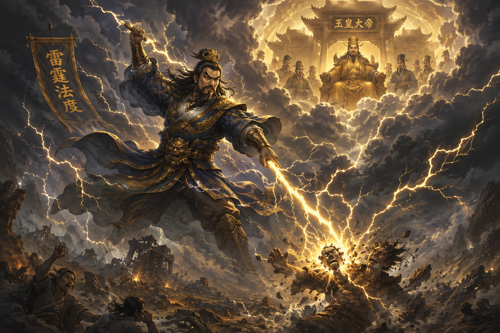
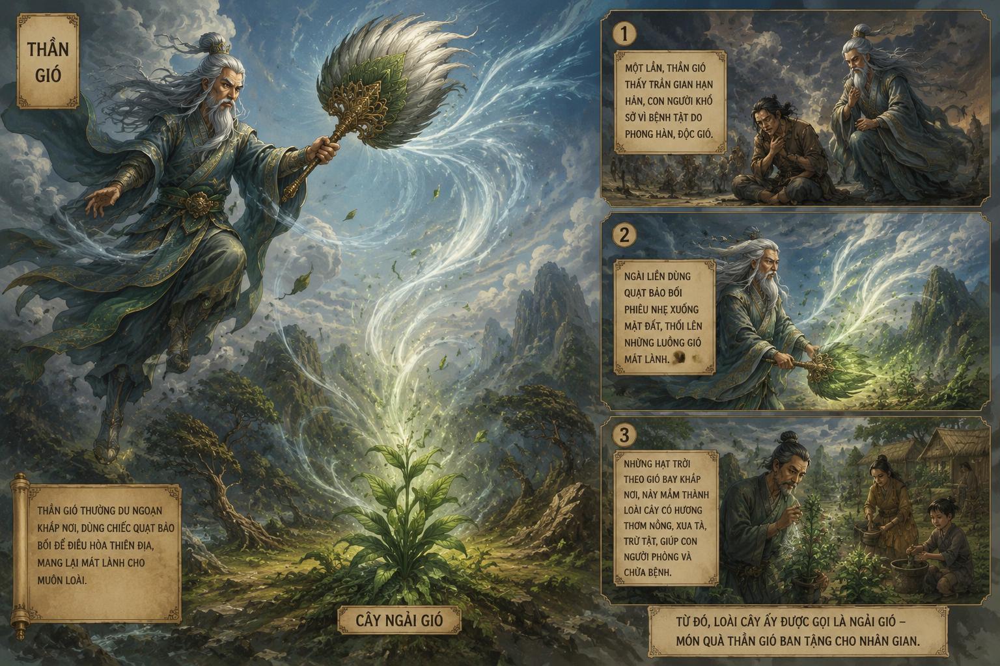

Ngữ Văn 10 • GDPT 2018 - Thần thoại suy nguyên dân gian Việt Nam
"Nêu tên một truyện kể hoặc bộ phim có nhân vật chính là một vị thần. Theo bạn, điều gì làm nên sức hấp dẫn của tác phẩm đó?"
Thuở ấy chưa có vũ trụ, chưa có muôn vật và loài người. Trời đất chỉ là một đám hỗn độn tối tăm và lạnh lẽo. Tự nhiên xuất hiện một vị thần thân thể to lớn không biết bao nhiêu mà kể: chân bước một bước từ tỉnh này qua tỉnh nọ hoặc từ đỉnh núi này sang đỉnh núi khác.
Hình 1.1: Thần Trụ Trời đắp cột đá rẽ phân trời đất
(File: h1.png - Hiển thị khi người dùng đặt file h1.png)
Hình 1.1 - Hình tượng Thần Trụ Trời khai thiên lập địa
Người hạ giới coi núi **Thạch Môn** (Kinh Chủ, Hải Dương) là di tích của cột chống trời, gọi là **Cột chống trời (Kình thiên trụ)** hay **núi Khổng Lồ**. Sau đó xuất hiện các vị thần tiếp tục kiến thiết thế giới:
| Thứ tự | Thần đảm nhận | Công việc Khai Thiên Lập Địa |
|---|---|---|
| Nhất | Ông đếm cát | Nghiền cát, đếm cát sa mạc |
| Nhì | Ông tát bể (biển) | Tát nước phân định biển sông |
| Ba | Ông kể sao | Treo các ngôi sao lên bầu trời |
| Bốn | Ông đào sông | Xẻ dòng chảy tạo nên sông ngòi |
| Năm | Ông trồng cây | Gieo mầm cây cối trên mặt đất |
| Sáu | Ông xây rú (núi) | Đắp nên các dãy núi cao |
| Bảy | Ông Trụ Trời | Đội trời, dựng cột chống trời |
Hình ảnh **"Đất phẳng như cái mâm vuông, trời như cái bát úp"** phản ánh trực giác hồn nhiên của người cổ đại khi quan sát vòm trời cong gập xuống đường chân trời bao quanh mặt đất phẳng bao la.

Hình 2.1: Thần Sét (Thiên Lôi) thi hành luật pháp Ngọc Hoàng
(File: h2.png - Hiển thị khi người dùng đặt file h2.png)
Hình 2.1 - Thần Sét mang lưỡi búa đá và cờ lệnh trỏ tội nhân
Do tính quá nóng nảy "hễ thấy là đánh liền", Thần Sét từng đánh lầm giết hại kẻ vô tội. Ngọc Hoàng phạt thần phải nằm im trong đám rừng thiên đình để **con gà thần** thỉnh thoảng mổ một cái đau nhói. Từ đó, hễ nghe tiếng gà là thần giật mình. Mỗi khi thấy chớp rạch, người hạ giới bắt chước tiếng gọi gà để dọa Thần Sét.
Thần Sét tuy có uy quyền gieo rắc tai họa khủng bố nhưng vẫn mang những nét yếu điểm nhân hóa (nóng nảy, đánh nhầm, từng bị Cường Bạo Đại Vương đánh thua), phản ánh ước mơ chinh phục tự nhiên của người xưa.
Thần Gió có hình dạng kỳ quặc: **không có đầu**. Bảo bối là chiếc **quạt màu nhiệm** tạo gió nhỏ hay bão lớn tùy lệnh Ngọc Hoàng. Khi xuống hạ giới dạo chơi tối trời, thần tạo nên những trận gió xoáy dữ dội, dân gian gọi là **Thần Cụt Đầu**.

Hình 3.1: Thần Gió quạt bảo bối và nguồn gốc Cây Ngải Gió
(File: h3.png - Hiển thị khi người dùng đặt file h3.png)
Hình 3.1 - Thần Gió quạt chiếc quạt thần tạo nên cuồng phong
Từ hình tượng Cây Ngải Gió trong câu chuyện, bạn có thể giải thích cách người xưa rút ra kinh nghiệm dự báo thời tiết và các phương thuốc chữa bệnh dân gian thông qua tư duy huyền thoại hóa tự nhiên.
| Nhóm Thần Thoại | Nhân Vật Chính | Nội Dung & Ý Nghĩa Phản Ánh |
|---|---|---|
|
THẦN THOẠI SUY NGUYÊN (Thần Trụ Trời, Thần Sét, Thần Gió...) |
Các vị thần sáng tạo thế giới: trời đất, mặt trời, mặt trăng, sông biển, mưa, gió, sấm, sét, muôn loài. | Giải thích nguồn gốc vạn vật, hiện tượng tự nhiên nguyên sơ bằng nhận thức ngây thơ nhưng giàu tưởng tượng của con người thời cổ đại. |
|
THẦN THOẠI SÁNG TẠO (Sơn Tinh - Thủy Tinh, Nữ Oa...) |
Các anh hùng thần thoại và anh hùng văn hóa. | Phản ánh công cuộc chinh phục thiên nhiên, khai phá văn minh, truyền thống lao động và tín ngưỡng cộng đồng. |
Xác định thời gian, không gian, nhân vật và sự kiện chính trong từng truyện kể (Thần Trụ Trời, Thần Sét, Thần Gió)?
Đáp án chi tiết:
Mục đích của tác giả dân gian khi sáng tạo ra nhân vật đứa con Thần Gió là gì?
Hướng giải quyết:
Nhân vật đứa con Thần Gió được sáng tạo nhằm giải thích các hiện tượng tự nhiên ngẫu nhiên (như cơn gió lốc bất ngờ tai hại) và lý giải nguồn gốc cây ngải gió trong đời sống dân gian cùng công dụng chữa bệnh cảm gió cho trâu.
10 câu hỏi trắc nghiệm củng cố kiến thức bài học
Bố trí khung sáng liền mạch (không chia cột) kèm hướng dẫn giải chi tiết
Giả sử trong tập hợp \(N = 100\) câu chuyện thần thoại Việt Nam sưu tầm được, có \(n_1 = 65\) truyện thuộc nhóm **Thần thoại Suy nguyên** và \(n_2 = 35\) truyện thuộc nhóm **Thần thoại Sáng tạo**.
Yêu cầu: Tính tỉ lệ phần trăm \(P_1, P_2\) của mỗi nhóm và phân tích ý nghĩa của kết quả này đối với giai đoạn bình minh nhận thức của người Việt cổ.
Lời giải chi tiết:
Giả định theo mô hình tưởng tượng tượng trưng, tốc độ đắp cao cột đá của Thần Trụ Trời là \(v = 500 \text{ m/ngày}\). Sau thời gian \(t = 30 \text{ ngày}\), vòm trời được nâng cao thêm một khoảng \(h\).
Yêu cầu: Viết công thức tính độ cao \(h = v \cdot t\) và cho biết ý nghĩa nghệ thuật của chi tiết kì ảo về quy mô cột đá trong việc thể hiện khát vọng con người.
Lời giải chi tiết:
Trong truyện Thần Sét, cuộc đọ sức giữa Cường Bạo Đại Vương và Thần Sét thể hiện sự xung đột giữa con người và thần linh.
Yêu cầu: Lập bảng so sánh đặc điểm giữa **Thần Sét** và **Cường Bạo Đại Vương** để làm rõ nét độc đáo trong tư duy dân gian Việt Nam.
Lời giải chi tiết:
| Tiêu chí | Thần Sét (Thiên Lôi) | Cường Bạo Đại Vương |
|---|---|---|
| Thế lực đại diện | Sức mạnh uy quyền của Thiên đình / Tự nhiên | Sức mạnh phản kháng của Con người trần gian |
| Kết quả trận đấu | Thua trận một dạo, làm cả Thiên đình xấu hổ | Đánh bại Thần Sét trước khi bị trừng phạt về sau |
**Kết luận**: Chi tiết Thần Sét bị thua Cường Bạo Đại Vương chứng tỏ người xưa không hoàn toàn khiếp sợ tự nhiên mà luôn tin tưởng vào bản lĩnh và ý chí hiên ngang của con người.